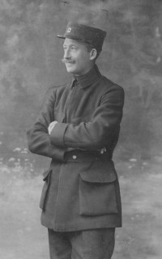
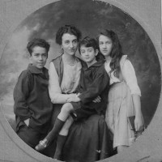
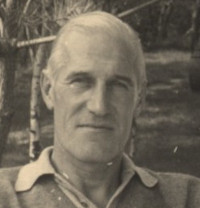
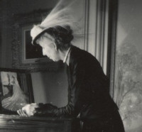

Famille Saint-Léger / Wattinne - Galerie de photos familiales
Galerie de photos familiales
Explorez nos albums de photos de famille. Cliquez sur les miniatures pour les voir en grand et naviguer dans l’album.
1914-1918 - Eugène Wattinne, Villa Sans soucis

1914-1918 - Madelaine Droulers

1937-1944 - Claude Saint Léger

1956-1971 - James Leplat

Jeanne Street
